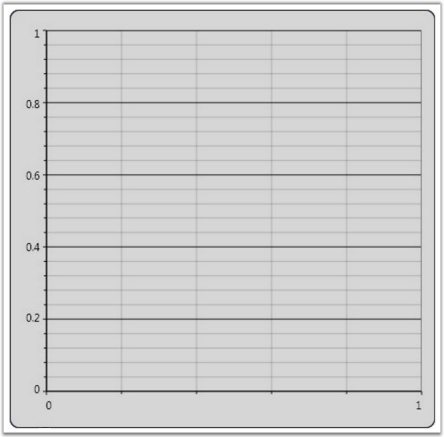

Once you add the Chart control, the first thing to do is to add a Chart Area and and Chart Series. The following code example illustrates how to do this.
|
[XAML]
<sfchart:Chart> <sfchart:ChartArea> <sfchart:ChartSeries/> </sfchart:ChartArea> </sfchart:Chart> |
|
[C#]
ChartArea area = new ChartArea(); Chart1.Areas.Add(area); ChartSeries series = new ChartSeries(); area.Series.Add(series); |

Figure 60: Chart Area added to the Chart Control
See Also
Multiple Areas, Chart Area Layout Customization